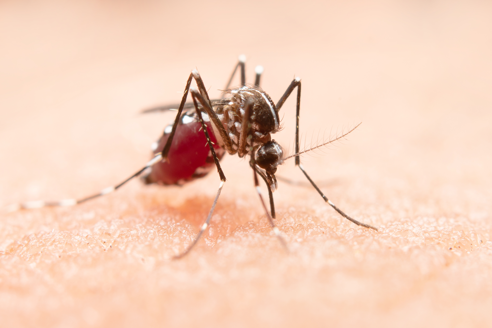

Penyebab Demam berdarah dengue
Penyakit DBD ditularkan oleh nyamuk aedes aegypti. Nyamuk ini merupakan penyebab DBD yang akan menularkan virus saat menggigit dan menghisap darah korbannya. Jenis nyamuk tersebut biasanya menyerang di pagi dan sore hari.
Secara tampilan, nyamuk ini cukup mudah dikenali dengan warnanya yang belang hitam-putih dengan ciri fisiknya yang kecil. Mereka tidak suka mendiami tempat yang kotor, melainkan menyasar tempat-tempat bersih, seperti bak mandi.
Selain itu, ada beberapa faktor risiko yang membuat Anda lebih rentan terkena penyakit demam berdarah, antara lain:
- Tinggal atau sedang bepergian ke daerah tropis.
- Memiliki riwayat infeksi virus dengue.
- Anak-anak, lansia, dan orang yang kekurangan sistem kekebalan tubuh.